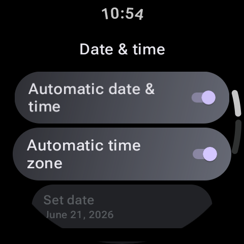

Keeping track of a busy schedule can be a constant challenge. Pulling out your phone every time you need to check a meeting time or verify a room number is disruptive and exposes you to notification distractions. Managing your agenda directly from your wrist is a much cleaner, more efficient approach.
Google Calendar on Wear OS provides a comprehensive, glanceable view of your appointments, schedules, and reminders. In this guide, we will walk you through the setup steps to sync Google Calendar with your Wear OS smartwatch, how to add calendar widgets, and how to resolve common sync errors.

Step 1: Install Google Calendar on Your Watch
While some Wear OS devices (like the Pixel Watch) come with Google Calendar pre-installed, others (like the Galaxy Watch) may default to proprietary calendar tools. To ensure seamless sync, it is best to install Google's official app:
- Open the Play Store app on your smartwatch.
- Search for "Google Calendar".
- Select the official Google app and tap Install or Update.
Step 2: Connect and Sync Google Accounts
Google Calendar pulls events directly from the Google accounts linked to your smartwatch. Let's make sure your accounts are correctly synced:
- On your watch, open the Settings app.
- Scroll down and select Accounts and backup (or Accounts).
- Tap on Google Account. Verify that the email address matches the primary account you use for calendar events on your phone and PC.
- If you use multiple accounts (like a personal and a work account), tap Add account to log into those additional profiles directly from your watch.
Pro Tip: Keep Calendar Tiles Active
Don't launch the app every time you want to check your day. Add the **Google Calendar "Next Event" or "Schedule" Tile** to your swipe carousel. This puts your upcoming agenda items just one swipe away from your home screen.
Step 3: Choose Which Calendars to Display
If you have many shared calendars, holiday lists, or sports schedules, your watch screen can get cluttered. You can filter these view profiles:
- Open the **Google Calendar** app on your phone.
- Tap the **Menu (three horizontal lines)** icon in the top left corner.
- Check or uncheck individual calendars under your accounts. Only checked profiles will sync data to the cloud and show up on your Wear OS watch.
Managing Calendar Events from Your Wrist
The Wear OS Google Calendar app isn't just a static viewer; it allows you to manage tasks and respond to invitations:
| Task Action | How to Do It on Watch | Result Behavior |
|---|---|---|
| View Event Details | Tap on any event card in the Schedule list. | Displays time, location, description, and attendee lists. |
| RSVP to Invites | Scroll to the bottom of a pending invite details view. | Tap "Yes," "No," or "Maybe" to update your status instantly. |
| Delete an Event | Open an event you created, scroll to the bottom. | Tap "Delete" to remove it from all synced devices. |
Troubleshooting Calendar Sync Issues
If your watch is displaying a blank schedule or failing to reflect changes made on your phone, try these solutions:
- Check Account Sync Settings: On your phone, go to **Settings > Accounts and backup > Manage accounts**. Tap your Google account, select **Sync account**, and ensure the toggle for **Calendar** is turned on.
- Restart Bluetooth and Wi-Fi: Toggle connections off and on to force a metadata handshake between your phone and watch.
- Clear Calendar Cache: On your watch, navigate to **Settings > Apps > App info > Google Calendar > Clear Cache**. Restart the app to force it to download a fresh database copy.
Conclusion
Syncing Google Calendar with your Wear OS smartwatch is a straightforward process that provides great productivity benefits. By ensuring your Google accounts match, choosing the right calendars, and placing tiles in your carousel, you can stay on top of your schedule and focus on your day. Spend a few minutes setting up your calendar views today to make sure you never miss another meeting!